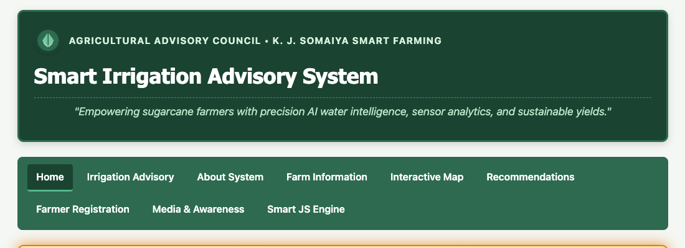
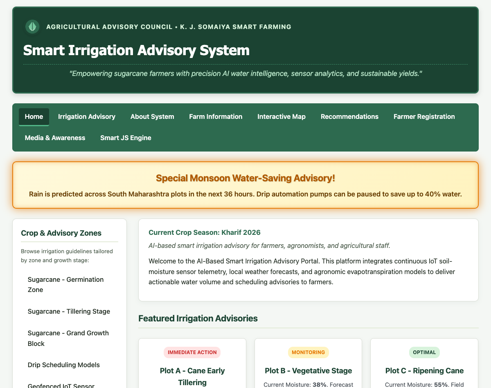
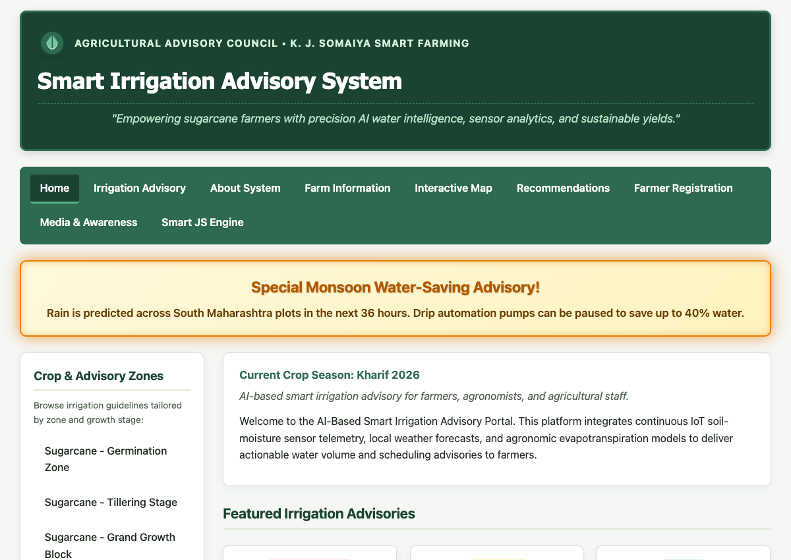
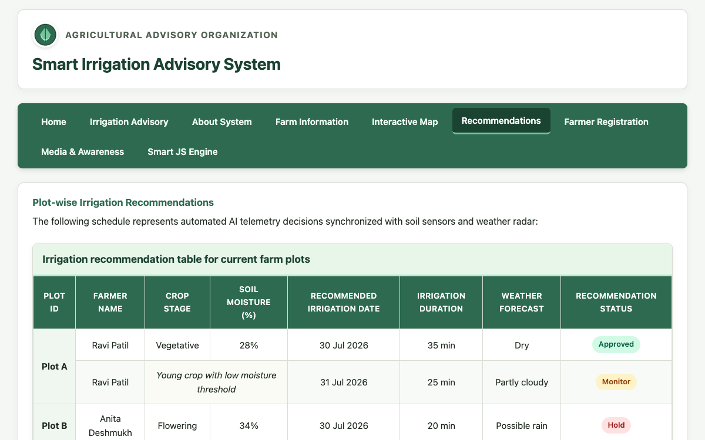

| Course Name: | Web Development Laboratory (316U01L306) | Semester: | III |
| Date of Performance: | 29 / 07 / 2026 | DIV / Batch No: | B - 3 |
| Student Name: | Pranav Mendon | Roll No: | 16010125138 |
- Implement different CSS3 styling techniques (Inline, Internal, External).
- Design responsive layouts using Flexbox and media queries.
- Enhance user interaction using animations and transitions.
- Maintain separation of content and presentation.
- MDN Web Docs – CSS: Cascading Style Sheets, Mozilla Developer Network, 2026.
- W3Schools – CSS3 Tutorial, Refsnes Data, 2026.
- E. Meyer and S. Weyl, "Cascading Style Sheets: The Definitive Guide," 4th ed., O'Reilly Media, 2018.
Cascading Style Sheets Level 3 (CSS3) is the standard presentation language used to format HTML5 documents. Modern CSS3 architecture promotes a clean separation of concerns, separating data structure from aesthetic styling.
1. Styling Integration Techniques:
• Inline CSS: Directly embedded in HTML tags via the style attribute.
• Internal CSS: Encapsulated within <style> tags in the <head>.
• External CSS: Linked via <link rel="stylesheet" href="style.css"> for site-wide consistency and browser caching.
2. Core CSS3 Concepts:
• Box Model: Defines content, padding, border, and margin boundaries. box-sizing: border-box ensures predictable dimension calculations.
• Flexbox & Grid: Flexible 1D and 2D layouts for modern responsive navigation menus and multi-column web dashboards.
• Transforms, Transitions & Animations: Hardware-accelerated dynamic feedback with transform: scale() and @keyframes pulse effects without JavaScript overhead.
Code Implementation:
<header class="layout-header" style="background-color: #1b4332; padding: 1.5rem; border: 3px solid #2d6a4f; border-radius: 10px; box-shadow: 0 4px 12px rgba(0,0,0,0.15);">
<p class="org-name" style="color: #d8f3dc; font-size: 0.95rem; font-weight: bold; letter-spacing: 0.08em; margin: 0 0 0.5rem 0; display: flex; align-items: center;">
<img class="logo" src="./images/image.png" alt="org logo" style="width: 44px; height: 44px; margin-right: 12px; border-radius: 50%;">
Agricultural Advisory Council • K. J. Somaiya Smart Farming
</p>
<h1 class="page-name" style="color: #ffffff; font-size: 2.1rem; margin: 0 0 0.5rem 0;">
Smart Irrigation Advisory System
</h1>
<p style="color: #b7e4c7; text-align: center; font-size: 1.1rem; font-style: italic; margin: 0.5rem 0 0 0; padding: 0.5rem; border-top: 1px dashed #40916c;">
"Empowering sugarcane farmers with precision AI water intelligence, sensor analytics, and sustainable yields."
</p>
</header>
/* =========================================================
nav.css - Navigation Menu Styling
Task 2 Requirements:
- Remove bullet points
- Display menu items horizontally
- Add hover effect
- Change link colors
- Use: :hover, text-decoration, display: inline-block
========================================================= */
.site-nav {
background-color: #2d6a4f;
padding: 0.5rem 1.5rem;
border-radius: 8px;
margin-bottom: 1.5rem;
box-shadow: 0 3px 8px rgba(0, 0, 0, 0.12);
}
.nav-menu {
list-style: none; /* Remove bullet points */
margin: 0;
padding: 0;
display: flex;
flex-wrap: wrap;
align-items: center;
gap: 0.5rem;
}
.nav-item {
display: inline-block; /* Display menu items horizontally */
margin: 0;
}
.nav-link {
display: inline-block; /* Display inline-block */
padding: 0.55rem 1rem;
color: #f0fff4; /* Link colors */
text-decoration: none; /* Remove underline */
font-weight: 600;
font-size: 0.95rem;
border-radius: 6px;
transition: all 0.25s ease-in-out;
}
/* Hover Effect */
.nav-link:hover {
background-color: #1b4332;
color: #95d5b2;
text-decoration: none;
transform: translateY(-2px);
box-shadow: 0 2px 6px rgba(0, 0, 0, 0.2);
}
.nav-link.active {
background-color: #1b4332;
color: #ffffff;
border-bottom: 3px solid #74c69d;
}
@media (max-width: 768px) {
.nav-menu {
flex-direction: column;
align-items: stretch;
}
.nav-item {
display: block;
width: 100%;
}
.nav-link {
display: block;
text-align: center;
}
}
/* =========================================================
style.css - Global Website Theme & Styling
Use Case: AI-based Smart Irrigation Advisory System (KJS-AGR-01)
========================================================= */
:root {
--primary-color: #1b4332;
--primary-light: #2d6a4f;
--accent-color: #40916c;
--accent-light: #74c69d;
--bg-color: #f4f7f4;
--card-bg: #ffffff;
--text-dark: #1f2a1f;
--text-muted: #516151;
--border-color: #d8ddd4;
--highlight-gold: #e9c46a;
--danger-color: #d90429;
--success-color: #2b9348;
--font-main: -apple-system, BlinkMacSystemFont, "Segoe UI", Roboto, Helvetica, Arial, sans-serif;
--transition-fast: 0.25s ease-in-out;
}
* {
box-sizing: border-box;
}
body {
margin: 0;
padding: 0;
font-family: var(--font-main);
color: var(--text-dark);
background-color: var(--bg-color);
line-height: 1.6;
}
/* Headings */
h1, h2, h3, h4, h5, h6 {
color: var(--primary-color);
margin-top: 0;
letter-spacing: -0.01em;
}
h1 {
font-size: 1.85rem;
margin-bottom: 0.5rem;
}
h2 {
font-size: 1.35rem;
margin-bottom: 0.75rem;
border-bottom: 2px solid #e2ebd8;
padding-bottom: 0.35rem;
}
h3 {
font-size: 1.15rem;
}
p {
margin: 0 0 0.85rem;
}
a {
color: var(--primary-light);
text-decoration: none;
transition: color var(--transition-fast);
}
a:hover {
color: var(--primary-color);
text-decoration: underline;
}
/* Common Card Containers */
.simple-card, .card {
background: var(--card-bg);
border: 1px solid var(--border-color);
border-radius: 10px;
padding: 1.25rem 1.5rem;
margin-bottom: 1.5rem;
box-shadow: 0 4px 12px rgba(27, 67, 50, 0.05);
transition: box-shadow var(--transition-fast), transform var(--transition-fast);
}
.simple-card:hover, .card:hover {
box-shadow: 0 6px 18px rgba(27, 67, 50, 0.1);
}
/* Header Organization & Logo */
.logo {
width: 44px;
height: 44px;
vertical-align: middle;
margin-right: 0.75rem;
border-radius: 50%;
box-shadow: 0 2px 6px rgba(0,0,0,0.15);
}
.org-name {
display: flex;
align-items: center;
font-size: 0.95rem;
font-weight: 700;
text-transform: uppercase;
letter-spacing: 0.08em;
color: var(--text-muted);
margin-bottom: 0.35rem;
}
.page-name {
margin: 0;
font-size: 1.75rem;
color: var(--primary-color);
}
.subtitle {
font-size: 1.05rem;
font-weight: 700;
color: var(--primary-light);
margin-bottom: 0.4rem;
}
.tagline {
font-style: italic;
color: var(--text-muted);
margin-bottom: 0.75rem;
}
/* Category Sidebar / Card Styles (Task 4) */
.category-sidebar {
background: #ffffff;
border: 1px solid var(--border-color);
border-radius: 10px;
padding: 1.25rem;
box-shadow: 0 4px 12px rgba(0, 0, 0, 0.06);
}
.category-list {
list-style: none;
padding: 0;
margin: 0;
}
.category-list li {
margin-bottom: 0.5rem;
}
.category-list a {
display: block;
padding: 0.6rem 0.85rem;
border-radius: 6px;
color: var(--text-dark);
text-decoration: none;
font-weight: 500;
transition: all var(--transition-fast);
border-left: 3px solid transparent;
}
.category-list a:hover {
background-color: #e8f5e9;
color: var(--primary-color);
border-left: 3px solid var(--primary-color);
padding-left: 1.1rem;
}
/* Advisory / Product Card Layout using Box Model (Task 5) */
.card-grid {
display: flex;
flex-wrap: wrap;
gap: 1.25rem;
margin: 1.5rem 0;
}
.advisory-card, .product-card {
display: inline-block;
vertical-align: top;
width: calc(33.333% - 0.85rem);
min-width: 240px;
margin: 0 0 1rem;
padding: 1.25rem;
border: 1px solid var(--border-color);
border-radius: 8px;
background-color: #ffffff;
box-shadow: 0 4px 10px rgba(0,0,0,0.06);
text-align: center;
transition: transform var(--transition-fast), box-shadow var(--transition-fast);
}
.advisory-card:hover, .product-card:hover {
transform: translateY(-4px);
box-shadow: 0 8px 18px rgba(0,0,0,0.12);
}
.advisory-card h3 {
margin: 0.5rem 0;
font-size: 1.15rem;
color: var(--primary-color);
}
.advisory-card .badge {
display: inline-block;
padding: 0.25rem 0.6rem;
border-radius: 12px;
font-size: 0.75rem;
font-weight: 700;
text-transform: uppercase;
background-color: #d8f3dc;
color: #1b4332;
margin-bottom: 0.5rem;
}
.advisory-card .badge.urgent {
background-color: #ffe3e3;
color: #c92a2a;
}
.advisory-card .badge.monitor {
background-color: #fff3bf;
color: #e67700;
}
/* Image Gallery with Scale Hover Effects (Task 6) */
.gallery-grid {
display: grid;
grid-template-columns: repeat(auto-fit, minmax(220px, 1fr));
gap: 1.25rem;
margin: 1.25rem 0;
}
.gallery-item {
position: relative;
overflow: hidden;
border-radius: 8px;
border: 2px solid var(--border-color);
background: #000;
}
.gallery-item img {
width: 100%;
height: 180px;
object-fit: cover;
display: block;
transition: transform 0.4s ease, filter 0.4s ease;
}
.gallery-item:hover img {
transform: scale(1.08);
filter: brightness(1.05);
}
.gallery-caption {
position: absolute;
bottom: 0;
left: 0;
right: 0;
background: rgba(27, 67, 50, 0.85);
color: #ffffff;
padding: 0.45rem 0.75rem;
font-size: 0.85rem;
font-weight: 600;
text-align: center;
}
/* CSS Effects & Highlighting: Offer / Emergency Alert Box (Task 10) */
@keyframes pulseGlow {
0% {
box-shadow: 0 0 10px rgba(233, 196, 106, 0.5), inset 0 0 5px rgba(233, 196, 106, 0.3);
border-color: #e9c46a;
}
50% {
box-shadow: 0 0 24px rgba(230, 119, 0, 0.85), inset 0 0 12px rgba(230, 119, 0, 0.4);
border-color: #e67700;
}
100% {
box-shadow: 0 0 10px rgba(233, 196, 106, 0.5), inset 0 0 5px rgba(233, 196, 106, 0.3);
border-color: #e9c46a;
}
}
.offer-box, .alert-highlight {
background: linear-gradient(135deg, #fff9db 0%, #fff3bf 100%);
border: 2px solid #fab005;
border-radius: 10px;
padding: 1.25rem 1.75rem;
margin: 1.5rem 0;
text-align: center;
animation: pulseGlow 2.5s infinite ease-in-out;
}
.offer-box h3, .alert-highlight h3 {
font-size: 1.45rem;
color: #b05a00;
margin: 0 0 0.5rem;
text-shadow: 1px 1px 2px rgba(0, 0, 0, 0.15);
}
.offer-box p, .alert-highlight p {
font-size: 1.05rem;
font-weight: 600;
color: #663c00;
margin: 0;
}
/* Common Footer Style (Task 3) */
.site-footer {
background-color: var(--primary-color);
color: #e8f5e9;
padding: 1.75rem 1rem;
margin-top: 3rem;
border-top: 4px solid var(--accent-light);
text-align: center;
font-size: 0.95rem;
}
.site-footer a {
color: #a7f3d0;
text-decoration: underline;
}
.site-footer p {
margin: 0.35rem 0;
}
/* =========================================================
table.css - Table Styling for Advisory & Price Lists
Task 7 Requirements:
- Collapse borders
- Add header background color
- Zebra-striping rows
- Center align text
- Use: border-collapse, nth-child(even)
========================================================= */
.table-responsive {
width: 100%;
overflow-x: auto;
margin: 1.5rem 0;
border-radius: 8px;
border: 1px solid #d8ddd4;
box-shadow: 0 2px 8px rgba(0, 0, 0, 0.05);
}
.data-table {
width: 100%;
border-collapse: collapse; /* Collapse borders */
text-align: center; /* Center align text */
font-size: 0.95rem;
background-color: #ffffff;
}
.data-table caption {
caption-side: top;
font-weight: 700;
font-size: 1.1rem;
color: #1b4332;
text-align: left;
padding: 0.75rem 1rem;
background-color: #e8f5e9;
border-bottom: 2px solid #a7f3d0;
}
.data-table th,
.data-table td {
border: 1px solid #d8ddd4;
padding: 0.75rem 0.85rem;
vertical-align: middle;
}
/* Header Background Color */
.data-table thead th {
background-color: #2d6a4f;
color: #ffffff;
font-weight: 600;
letter-spacing: 0.03em;
text-transform: uppercase;
font-size: 0.85rem;
}
/* Zebra-striping Rows */
.data-table tbody tr:nth-child(even) {
background-color: #f7faf7; /* Zebra striping with nth-child(even) */
}
.data-table tbody tr:hover {
background-color: #eef6ee;
}
/* Status cell styling */
.status-pill {
display: inline-block;
padding: 0.25rem 0.65rem;
border-radius: 20px;
font-size: 0.8rem;
font-weight: 600;
}
.status-approved {
background-color: #d1fae5;
color: #065f46;
}
.status-monitor {
background-color: #fef3c7;
color: #92400e;
}
.status-hold {
background-color: #fee2e2;
color: #991b1b;
}
/* Table Footer */
.data-table tfoot td {
background-color: #f1f5f1;
font-style: italic;
color: #4b5563;
padding: 0.75rem 1rem;
}
/* =========================================================
form.css - Farmer Registration Form Styling
Task 8 Requirements:
- Input boxes width, padding
- Submit button color and hover effect
- Fieldset and legend
- Use: :focus, :hover, border-radius
========================================================= */
.form-card {
background: #ffffff;
border: 1px solid #d8ddd4;
border-radius: 12px;
padding: 2rem;
box-shadow: 0 4px 16px rgba(0, 0, 0, 0.06);
max-width: 850px;
margin: 1.5rem auto;
}
.agri-form {
display: flex;
flex-direction: column;
gap: 1.5rem;
}
/* Fieldset and Legend Styling */
.agri-form fieldset {
border: 1.5px solid #c9d8c5;
border-radius: 8px; /* border-radius */
padding: 1.25rem 1.5rem 1.5rem;
margin: 0;
background-color: #fafcfa;
transition: border-color 0.25s ease;
}
.agri-form fieldset:focus-within {
border-color: #2d6a4f;
}
.agri-form legend {
font-weight: 700;
font-size: 1.05rem;
color: #1b4332;
padding: 0 0.5rem;
}
/* Form Layout Grid */
.form-grid {
display: grid;
grid-template-columns: repeat(2, 1fr);
gap: 1.25rem 1.5rem;
}
.form-group {
display: flex;
flex-direction: column;
gap: 0.35rem;
position: relative;
}
.form-group.full-width {
grid-column: 1 / -1;
}
.form-group label {
font-size: 0.9rem;
font-weight: 600;
color: #2d3748;
}
.form-group .required-star {
color: #d90429;
}
/* Input Boxes Width, Padding, Border-Radius, Focus */
.form-group input[type="text"],
.form-group input[type="tel"],
.form-group input[type="email"],
.form-group input[type="number"],
.form-group input[type="date"],
.form-group input[type="file"],
.form-group select {
width: 100%; /* input boxes width */
padding: 0.75rem 0.85rem; /* padding */
border: 1.5px solid #d1d5db;
border-radius: 6px; /* border-radius */
font-size: 0.95rem;
font-family: inherit;
color: #1f2937;
background-color: #ffffff;
outline: none;
transition: border-color 0.2s ease, box-shadow 0.2s ease;
}
/* Pseudo-class: :focus */
.form-group input:focus,
.form-group select:focus {
border-color: #2d6a4f;
box-shadow: 0 0 0 3px rgba(45, 106, 79, 0.2);
background-color: #ffffff;
}
/* Invalid state highlighting */
.form-group input.is-invalid,
.form-group select.is-invalid {
border-color: #d90429 !important;
background-color: #fff5f5;
box-shadow: 0 0 0 2px rgba(217, 4, 41, 0.2);
}
.form-group input.is-valid,
.form-group select.is-valid {
border-color: #2b9348 !important;
background-color: #f6fff8;
}
/* Error message label */
.error-msg {
font-size: 0.8rem;
color: #d90429;
font-weight: 500;
min-height: 1.1rem;
display: block;
}
/* Radio & Checkbox Groups */
.options-row {
display: flex;
flex-wrap: wrap;
gap: 1.25rem;
padding-top: 0.25rem;
}
.option-label {
display: inline-flex;
align-items: center;
gap: 0.45rem;
cursor: pointer;
font-size: 0.92rem;
font-weight: 500;
color: #374151;
}
.option-label input[type="radio"],
.option-label input[type="checkbox"] {
width: 17px;
height: 17px;
accent-color: #2d6a4f;
cursor: pointer;
}
/* Action Buttons (Submit & Reset) */
.form-actions {
display: flex;
gap: 1rem;
margin-top: 1rem;
}
.btn {
display: inline-flex;
align-items: center;
justify-content: center;
padding: 0.75rem 1.75rem;
font-size: 1rem;
font-weight: 600;
border-radius: 6px; /* border-radius */
border: none;
cursor: pointer;
transition: all 0.25s ease;
}
/* Submit Button Color and Hover Effect */
.btn-submit {
background-color: #2d6a4f; /* Submit button color */
color: #ffffff;
box-shadow: 0 4px 10px rgba(45, 106, 79, 0.3);
}
.btn-submit:hover {
background-color: #1b4332; /* Hover effect */
transform: translateY(-2px);
box-shadow: 0 6px 14px rgba(27, 67, 50, 0.4);
}
.btn-reset {
background-color: #e5e7eb;
color: #374151;
}
.btn-reset:hover {
background-color: #d1d5db;
color: #111827;
transform: translateY(-1px);
}
/* Success notification message */
.alert-success {
display: none;
background-color: #d1fae5;
border: 1px solid #34d399;
color: #065f46;
padding: 1rem 1.25rem;
border-radius: 8px;
margin-bottom: 1.5rem;
font-weight: 600;
text-align: center;
}
@media (max-width: 680px) {
.form-grid {
grid-template-columns: 1fr;
}
.form-actions {
flex-direction: column;
}
.btn {
width: 100%;
}
}
/* =========================================================
layout.css - Multi-Column Page Layout
Task 9 Requirements:
- Header at top
- Sidebar to left
- Content to right
- Footer at bottom
- Use: float or flex
- Set widths and spacing
========================================================= */
.site-wrapper {
width: 95%;
max-width: 1200px;
margin: 0 auto;
padding: 1rem 0;
}
/* Page Header */
.layout-header {
width: 100%;
margin-bottom: 1.5rem;
}
/* Two-column Container with Flexbox */
.layout-container {
display: flex;
flex-direction: row;
gap: 1.75rem;
align-items: flex-start;
margin-bottom: 2rem;
}
/* Sidebar to Left (approx 28% width) */
.layout-sidebar {
flex: 0 0 280px;
width: 280px;
}
/* Content to Right (flexible remaining width) */
.layout-content {
flex: 1;
min-width: 0; /* Prevents overflow issues */
}
/* Alternative Float-based structure for compatibility demonstration */
.float-layout-container::after {
content: "";
display: table;
clear: both;
}
.float-sidebar {
float: left;
width: 25%;
box-sizing: border-box;
}
.float-content {
float: right;
width: 73%;
box-sizing: border-box;
}
/* Footer at Bottom */
.layout-footer {
width: 100%;
clear: both;
}
/* Responsive adjustments */
@media (max-width: 860px) {
.layout-container {
flex-direction: column;
}
.layout-sidebar {
width: 100%;
flex: auto;
}
.layout-content {
width: 100%;
}
.float-sidebar, .float-content {
float: none;
width: 100%;
}
}
Expected Output / Screenshots:





1. Use Bootstrap for CSS. Compare Vanilla CSS with Bootstrap framework.
• Grid Architecture: Vanilla CSS utilizes native CSS Grid and Flexbox with complete control over sizing. Bootstrap provides a 12-column responsive layout system using utility classes (.container, .row, .col-md-6).
• Bundle Weight & Performance: Custom Vanilla CSS in this project is ~4 KB, giving optimal load performance. Bootstrap requires an external library (~200 KB) unless purged.
• Customization: Vanilla CSS allows bespoke theme styling, while Bootstrap speeds up prototyping with pre-styled cards, modals, and navbars.
The experiment demonstrated the systematic application of CSS3 styling principles across inline, internal, and external stylesheets. The separation of presentation from HTML5 structure resulted in cleaner code and improved maintainability. Media queries and Flexbox ensured seamless adaptability across mobile and desktop displays.
Peer feedback:
1. Rohan Sharma (16010125140): "The glowing alert animation for emergency advisories is visually striking and immediately grabs attention."
2. Ananya Verma (16010125142): "The two-column layout with category sidebar to the left is clean, responsive, and intuitive on mobile viewports."
3. Aditya Kulkarni (16010125145): "The image gallery hover zoom effect feels premium and the zebra-striped table makes reading plot data effortless."
Faculty remarks: Successfully completed all 10 CSS3 tasks with excellent layout fidelity and responsive design.